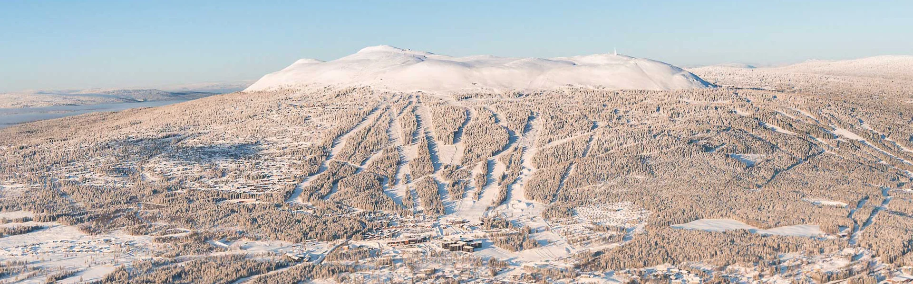

Visit Trysil!
The hotel is located on the north side of Trysilsfjället, 802 m above sea level with overwhelming views of the mountain and with the ski slope just outside. Here are service facilities such as sauna world with pool, SPA, restaurants, bars, après ski, cafes and playrooms for the little ones. In addition, the sports shop and ski rental are right next door.
Trysilfjellet consists of four contiguous areas.
The tourist center on the south side and offers long, wide ski slopes in all levels of difficulty. Here is also the children's area Valle's ski area and several Snow Parks.
Høyfjellssenteret is located on the north side of the mountain. There are many green slopes, a number of red slopes and a large children's area with Valle's ski area.
Høgegga is the steepest area in Trysil with challenging skiing on black slopes. It is also a favorite area for many alpine ski stars.
Ski hut is located on the south side of the mountain and offers long sunny days. There is an express lift, children's area, restaurants and skiing on blue and red slopes.
The highest skiing in Trysil is 1,100 meters. The longest piste is 5.4 kilometers, the highest drop is 685 meters. In total, there are 68 different ski slopes and 30 ski lifts. Of these slopes, 23 are green, 21 blue, and 14 black. The range of slopes is huge!